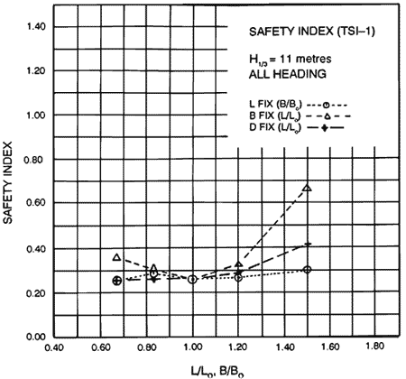
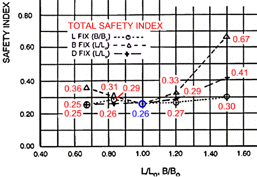
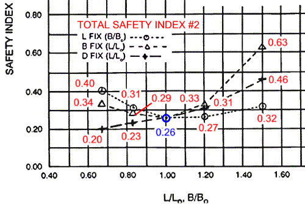
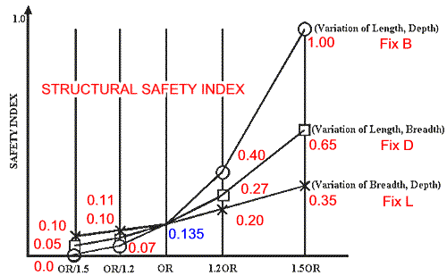
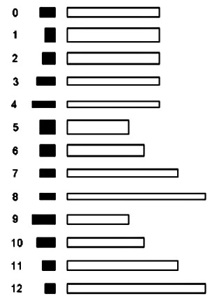
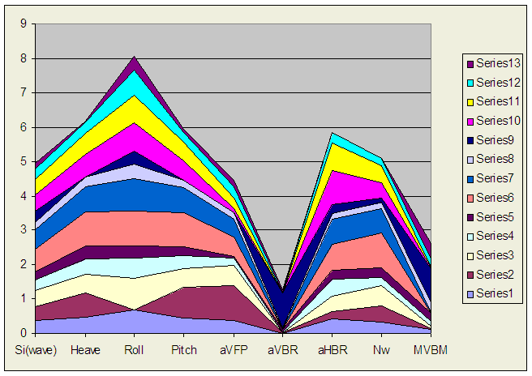
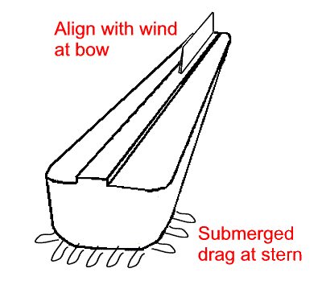
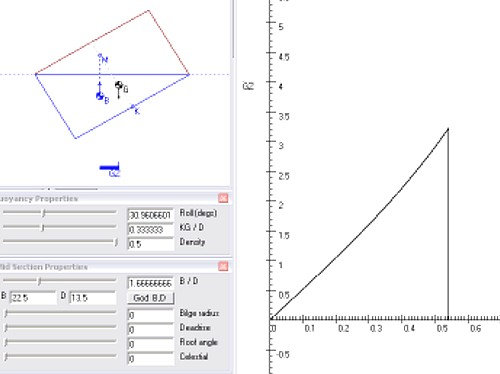
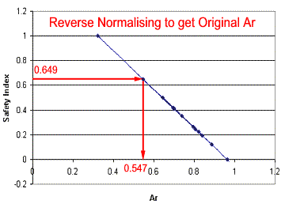

Tim Lovett © Oct 2004
.
Observations and comments on the results given in the technical paper
"Safety Investigation of Noah’s Ark in a Seaway" by S.W. Hong, S.S. Na, B.S. Hyun, S.Y. Hong, D.S. Gong, K.J. Kang, S.H. Suh, K.H. Lee, and Y.G. Je. First published in: Creation Ex Nihilo Technical Journal 8(1):26–35, 1994.
Available here: http://www.answersingenesis.org/home/area/Magazines/tj/docs/v8n1_ArkSafety.asp
Indexed Version here: http://www.worldwideflood.com/ark/safety_aig/safety_aig.htm
The Hong paper was first published through the Korea Association of Creation Research (KACR) founded in 1981. The project "Safety Investigation of Noah's Ark in a Seaway" was completed in 1993 by Dr. S. W. Hong and others at Korea Research Institute of Ships and Ocean Engineering, demonstrating that the Ark's design was the best of all possible designs. (ICR on KACR , KACR website)
The following year the landmark paper was published in English in Creation Ex Nihilo Technical Journal 8(1):26–35, 1994. Ten years later the paper is still used to support the validity of Noah's Ark at sea.
Hong's Conclusions
The paper investigates a combination of three major safety parameters - structural safety, overturning stability, and seakeeping quality. Standard ship rules, computational methods and model tests were used in the KACR funded project at the world class KRISO research center. (formerly KORDI)
The team of nine researchers headed by Dr Seok-Won Hong, Principal Research Scientist at KRISO BS, MS (Naval Architect) PhD (Applied Mechanics) also included engineering Professor S.S Na of Mokpo University handling the structural modeling of Noah's Ark.
The methodology is uncomplicated - take the Biblical proportions and see what happens if they are modified. The performance of the Biblical ark (300L x 50B x 30D) was compared to 12 arks of equal volume but modified by 20% and 50% in length, breadth or depth.
"The total safety index, defined as the weighted average of three relative safety performances, showed that the Ark had a superior level of safety in high winds and waves compared with the other hull forms studied. The voyage limit of the Ark, estimated on the basis of modern passenger ships' criteria reveals that it could have navigated through waves higher than 30 meters."
What do the numbers say?
While some of the results are not explicitly stated (e.g. wave bending moment), there is enough data to make comparisons between the various hulls. The final chart of Total Safety Index (TSI-1) excludes the stability index, so it is really only the average of seakeeping and strength indices.
 |
| Figure 8. Total safety index Case 1. |
A low index is safest. This chart is actually saying Noah's Ark is equal second* out of the 13 hulls, but there is not much between the top ranked hulls. When combining the three parameters in a weighted safety index according to Hong's methodology, it turns out that Noah's Ark looks pretty good. Assuming the graph is reasonably accurate, the TSI data would be something like this;
* L fixed B/1.5 hull #1 and D fixed L/1.5 hull #9 share the 0.25 value, so while the Ark is numerically second it could be ranked at equal third place. (Not by much however)

In the second Total Safety Index Hong weighted each index at seakeeping (x2), structure (x2) and roll (x1)*, giving;

The data for structural safety index is obtainable from the chart despite an un-calibrated axis. The known upper and lower bounds (from zero to 1) provide a means for scaling.

Laying this out in a single table, where;
SK Si = Total seakeeping safety index directly from Table 2, column 1
Struct Si = Structural safety index derived from the above graph
Roll Si = Overturning Safety Index (moment arm) directly from Table 3. column 4.
| L | B | D |
Hull front and side views |
SK Si | Norm SK | Struct Si | Roll Si | Comment |
| 135 | 22.5 | 13.5 |  |
0.3575 | 0.399 | 0.15 | 0.247 | Mr average |
| 135 | 15 | 20.3 | 0.4125 | 0.507 | 0.10 | 1.000 | worst stability, worst bow accel | |
| 135 | 18.8 | 16.2 | 0.465 | 0.611 | 0.11 | 0.420 | accel and roll problems | |
| 135 | 27 | 11.25 | 0.31125 | 0.308 | 0.20 | 0.264 | similar to the Ark but weaker | |
| 135 | 33.8 | 9 | 0.24375 | 0.175 | 0.35 | 0.412 | too low, strength issues | |
| 90 | 22.5 | 20.3 | 0.66 | 1.000 | 0.00 | 0.222 | strongest, worst accelerations | |
| 112.5 | 22.5 | 16.2 | 0.5475 | 0.773 | 0.05 | 0.193 | 2nd to hull #5 | |
| 162 | 22.5 | 11.3 | 0.22875 | 0.145 | 0.40 | 0.350 | worst vertical accel, 3rd weakest | |
| 202.5 | 22.5 | 9 | 0.345 | 0.374 | 1.00 | 0.499 | weakest, extreme vert accel | |
| 90 | 33.8 | 13.5 | 0.45125 | 0.584 | 0.05 | 0.000 | top stability, 4th worst accel | |
| 112.5 | 27 | 13.5 | 0.45 | 0.581 | 0.07 | 0.120 | more sedate version of #9 | |
| 162 | 18.8 | 13.5 | 0.3025 | 0.291 | 0.27 | 0.409 | nice comfort, bit below average | |
| 202.5 | 15 | 13.5 | 0.155 | 0.000 | 0.65 | 0.649 | best comfort, 2nd last the rest |
The ark ranks nearly average in each safety index, 7th in seakeeping, 6th in hull strength and 5th in roll stability.
|
Noah's ark individual safety index ranking |
||||
| Desc | TSK Si | Struct Si | Roll Si | TSI Ranking |
| Pure seakeeping (worst) | 1 | 0 | 0 | 12,7,4,11,3,8,0,1,10,9,2,6,5 |
| Pure strength | 0 | 1 | 0 | 5,9,6,10,1,2,0,3,11,4,7,12,8 |
| Pure stability | 0 | 0 | 1 | 9,10,6,5,0,3,7,11,4,2,8,12,1 |
Hong combines the 3 safety indices to get a final ranking. But how sensitive is the data to the relative weighting given to each index?.
|
Weighting sensitivity (Hong's Si) |
||||
| Desc | TSK Si | Struct Si | Roll Si | TSI Ranking |
| Hong TSI-1 | 1 | 1 | 0 | 9,0,3,1,10,11,2,4,6,7,5,12,8 |
| Hong TSI-2 | 2 | 2 | 1 | 9,10,0,3,6,5,11,2,4,7,1,12,8 |
| "Equally" weighted | 1 | 1 | 1 | 9,10,0,3,6,5,7,11,2,4,12,1,8 |
| Structural emphasis | 1 | 2 | 1 | 9,10,6,5,0,3,2,11,4,7,1,12,8 |
| Capsize emphasis | 1 | 1 | 2 | 9,10,6,0,3,5,7,11,2,4,12,8,1 |
| Favor Noah's Ark | 3.88 | 3.11 | 0.289 | 3,9,0,10,11,4,1,7,2,6,5,12,8 |
Actually, since the Total Seakeeping index was not normalized, (i.e. range is not from 0 to 1 but from 0.155 to 0.6625 - a range of only 0.5075 ) then Hong's weighting is not really 1:1:0 or 2:2:1, but closer (not exactly) to 0.5:1:0 and 1:2:1 etc.
Repeating the above table using a normalized seakeeping index generally lowers the ranking of Noah's Ark.
|
Weighting sensitivity (with Normalized Seakeeping index) |
||||
| Desc | Norm TSK Si | Struct Si | Roll Si | TSI Ranking |
| Hong TSI-1(n) | 1 | 1 | 0 | 3,4,7,0,11,1,9,12,10,2,6,5,8 |
| Hong TSI-2 (n) | 2 | 2 | 1 | 9,3,0,10,7,4,11,6,2,12,1,5,8 |
| Equally weighted (n) | 1 | 1 | 1 | 9,10,3,0,7,4,11,6,2,5,12,1,8 |
| Structural emphasis (n) | 1 | 2 | 1 | 9,10,0,3,6,5,11,2,4,7,1,12,8 |
| Capsize emphasis (n) | 1 | 1 | 2 | 9,10,3,0,6,7,4,11,5,2,12,8,1 |
| Favor Noah's Ark (n) | 1.058 | 0.8 | 0.65 | 3,9,7,0,4,10,11,12,6,2,5,1,8 |
There are other weighting factors that could further influence the results. The TSK index is the sum of eight normalized seakeeping parameters - mostly accelerations of the vessel at sea. Heave, pitch, roll, vertical acceleration at bow, deckwetting frequency, slamming frequency near the bow/stern and the vertical and lateral accelerations in the center. Hong weighted them all equally, but alternative schemes might be just as valid. Another important point here is that this seakeeping data is for 11m waves (H1/3), not 3m or 30m which could also change things.
| Ship No. | Si(wave) | Heave | Roll | Pitch | aVFP | aVBR | aHBR | Nw | MVBM |
| 0 | 0.36 | 0.49 | 0.68 | 0.45 | 0.38 | 0.01 | 0.42 | 0.33 | 0.10 |
| 1 | 0.41 | 0.69 | 0.00 | 0.87 | 1.00 | 0.01 | 0.21 | 0.48 | 0.04 |
| 2 | 0.47 | 0.55 | 0.91 | 0.58 | 0.58 | 0.00 | 0.47 | 0.57 | 0.06 |
| 3 | 0.31 | 0.44 | 0.60 | 0.36 | 0.22 | 0.02 | 0.47 | 0.24 | 0.14 |
| 4 | 0.24 | 0.38 | 0.37 | 0.26 | 0.07 | 0.06 | 0.26 | 0.31 | 0.24 |
| 5 | 0.66 | 1.00 | 1.00 | 1.00 | 0.55 | 0.00 | 0.75 | 1.00 | 0.00 |
| 6 | 0.55 | 0.72 | 0.95 | 0.72 | 0.54 | 0.00 | 0.74 | 0.68 | 0.03 |
| 7 | 0.23 | 0.27 | 0.42 | 0.22 | 0.18 | 0.07 | 0.18 | 0.20 | 0.29 |
| 8 | 0.35 | 0.00 | 0.38 | 0.00 | 0.00 | 1.00 | 0.25 | 0.13 | 1.00 |
| 9 | 0.45 | 0.67 | 0.81 | 0.56 | 0.11 | 0.00 | 1.00 | 0.45 | 0.01 |
| 10 | 0.45 | 0.63 | 0.79 | 0.55 | 0.32 | 0.00 | 0.78 | 0.49 | 0.04 |
| 11 | 0.30 | 0.30 | 0.77 | 0.29 | 0.31 | 0.02 | 0.32 | 0.21 | 0.20 |
| 12 | 0.16 | 0.05 | 0.39 | 0.07 | 0.19 | 0.09 | 0.00 | 0.00 | 0.45 |
| Table 2 (Hong). Seakeeping safety indices for a wave height H1/3 = 11 meters (safest = 0, least safe = 1). | |||||||||
Some parameters are obscured in the normalizing process by extreme figures - especially from the 50% modified hulls. e.g. Hull 8 has more than 10 times the vertical acceleration of any other hull, so the normalized vertical accelerations of the other hulls are negligible. (Seems odd that Hull 8 can have the highest vertical acceleration but the lowest heave...).
A loss of aVBR contribution after normalizing with the excessive magnitude of Hull 8.

What about Hull 9?
Why is hull 9 consistently superior? It outperforms Noah's Ark in both stability and hull strength, which means that it could ride bigger waves and it would be easier to build. Considering that these are the usual objections to the construction of the Ark (couldn't handle the waves, too hard to make), it seems surprising that the ark does not appear to be optimized on these issues alone.
The Biblical proportions are clearly adequate, Noah's Ark consistently ranks near the top in almost any weighting scheme and never below 7th place (pure seakeeping). But the extra effort required to build the longer hull seems surprising. There is certainly a lot less wood in hull 9. (In reality even more exaggerated because space is lost to the extra wood). In most cases, hull 10 is also ahead of the Biblical Ark.
Even the optimal weighting of seakeeping (3.88), strength (3.11) and roll (0.289) cannot bring Noah's Ark out on top. From this information one would think the ark should have been a little shorter. After all, lifeboats aren't so long and skinny.
What else was God thinking?
The waves of Noah's flood are from three possible sources - tsunamis, currents and wind. Geological evidences can give some clues about the floodwaters, such as calculating the water velocity required to transport large boulders observed in conglomerates. The dimensions of the Ark itself give perhaps the best picture of the severity of the floodwaters.
Flood water clues based on the Ark specifications;
The ship-like proportions of the Ark
The scale of the ark
The fact that no other ships survived. A lower limit to severity
The assumption that the Ark did not spend too much time riding critical wavelengths. Waves should be mostly bigger or smaller than the design wave for hogging for example. The worst case wavelength is somewhere near the length of the vessel (worst case pitching, hull bending). Nippon guidelines give a wave length of 140m as the design wave in a following sea for an 18" cubit Ark. The biggest waves are not necessarily the worst.
Since the ark "moved about on the surface of the waters", wind is considered to be the most significant factor. See Waves.
Hong's seakeeping analysis assumes a confused sea. "...the waves came from all directions with the same probability." Genesis speaks of a wind sent to dry the earth - a global scale wind without interference from landforms. A consistent wind of unlimited fetch would generate mature waves, having long wavelengths and probably all in the same direction - at least from the Ark's perspective. In such a case a longer vessel is better, provided it doesn't end up broaching (going side-on to the waves).
The proportions God chose for Noah's Ark indicate that the waves did not come equally from all directions, but had a dominant heading. The length of the ark is beyond the optimum for a confused sea, which compromises roll stability. However, by keeping a course with the wind the ark would easily outperform the shorter hulls 9 and 10 of the Hong study. Ask any mariner - ships aren't supposed to go side-on to the waves.
The most accurate way to gauge the conditions of the flood is to look at the specifications of Noah's Ark. If the water was very calm it could have been lower - maybe 2 decks which is easier. If the seas were confused it should have been shorter. To some extent Noah's Ark appears to have been designed for large wind generated waves traveling almost uni-directionally with respect to the ark. However it still has a wide enough base to handle some weather from other directions - and a smaller confused sea.
To ensure the Ark does not end up side-on to the waves, the stern should drag in the water and the bow should align with the wind. The usual trick would be a sea anchor. Since the typical sea anchor in the form of an underwater sail is likely to foul with floating debris and require attention, the stern drag might be generated by protruding features of the hull itself (logs etc). The bow would need the equivalent of a wind vane - perhaps a fin or raised area (forecastle).
The use of skegs at the stern to provide a rudder effect (somewhat akin to the fin of a surf board) might also help to steer the vessel downwind. However, it will travel faster than a deliberately dragging stern, which may (or may not) lead to the dangerous quartering condition where the ship almost begins to "surf" with a wave. Without propulsion this is more likely to result in a capsize risk. However, analysis is required to give an answer to this question, as well as reasonable proportions for the protrusions designed to steer the hull.
In any case, the basic principle of aligning the ark is very simple. The vessel needs to catch the wind at the bow and catch the water at the stern. This is almost the same as a badminton shuttlecock. The ball has the mass and travels under the pull of gravity - like the drive of the wind catching bow feature. The feathers drag the tail just like the drag of the stern in the water.

Shuttlecock Ark using deliberate drag at the stern.
Using skegs rather than deliberate drag at the stern, the principle is more like a feathered arrow or dart. Here, gravity on the point of the dart represents the wind catching features of the bow, and the feathers represent the skeg details at the stern.
Addendum
In the original English translation of the Korean paper, a few transcription errors were made in Table 3.
Here is the original table as it appeared in Creation Ex Nihilo Technical Journal 8(1):26–35, 1994.
| Table 3. Results of overturning stability calculations (safest = 0, least safe = 1). | |||
| Ship No. | flim (degree) | AR (m.rad) | Safety Index |
| 0 | 31.0 | 0.805 | 0.247 |
| 1 | 53.5 | 0.321 | 1.000 |
| 2 | 40.8 | 0.694 | 0.420 |
| 3 | 22.6 | 0.794 | 0.264 |
| 4 | 14.9 | 0.412 | 0.412 |
| 5 | 42.0 | 0.222 | 0.222 |
| 6 | 35.8 | 0.193 | 0.193 |
| 7 | 26.6 | 0.739 | 0.350 |
| 8 | 21.8 | 0.643 | 0.499 |
| 9 | 21.8 | 0.964 | 0.000 |
| 10 | 26.6 | 0.887 | 0.120 |
| 11 | 35.8 | 0.409 | 0.409 |
| 12 | 42.0 | 0.649 | 0.649 |
The red figures appear to have been duplicated during transcription. How do we know it was a transcription error? Which is correct - Ar or the Safety Index?
Using the WorldWideFlood Roll Stability Calculator; (You can do this yourself, but use 10000 intervals or so)

The following data was obtained. The Ar data was normalized to give Safety Index.
|
WorldWideFlood data |
|||
| Ship No. | flim (degree) | AR (m.rad) | Safety Index |
| 0 | 30.964 | 0.805 | 0.248 |
| 1 | 53.471 | 0.320 | 1.000 |
| 2 | 40.827 | 0.693 | 0.421 |
| 3 | 22.620 | 0.793 | 0.266 |
| 4 | 14.931 | 0.700 | 0.411 |
| 5 | 41.987 | 0.821 | 0.223 |
| 6 | 35.754 | 0.841 | 0.192 |
| 7 | 26.565 | 0.740 | 0.350 |
| 8 | 21.801 | 0.643 | 0.499 |
| 9 | 21.801 | 0.965 | 0.000 |
| 10 | 26.565 | 0.888 | 0.120 |
| 11 | 35.754 | 0.701 | 0.409 |
| 12 | 41.987 | 0.547 | 0.648 |
The Safety index matches the Hong data with an average absolute error of 0.3% - which is about right for three significant figures. The trustworthy data is column 4 - the Safety Index. The rest of the paper goes on to use these Safety Indices, so is unaffected even if the error was not typographical. Furthermore, since we have plenty of valid data including the upper and lower bounds of Ar, we can use Hong's data exclusively to generate the original five values by reversing the normalizing step.

The corrected table (derived using Hong's data only);
| Ship No. | flim (degree) | AR (m.rad) | Safety Index |
| 0 | 31.0 | 0.805 | 0.247 |
| 1 | 53.5 | 0.321 | 1.000 |
| 2 | 40.8 | 0.694 | 0.420 |
| 3 | 22.6 | 0.794 | 0.264 |
| 4 | 14.9 | 0.699 | 0.412 |
| 5 | 42.0 | 0.821 | 0.222 |
| 6 | 35.8 | 0.840 | 0.193 |
| 7 | 26.6 | 0.739 | 0.350 |
| 8 | 21.8 | 0.643 | 0.499 |
| 9 | 21.8 | 0.964 | 0.000 |
| 10 | 26.6 | 0.887 | 0.120 |
| 11 | 35.8 | 0.701 | 0.409 |
| 12 | 42.0 | 0.547 | 0.649 |
The average absolute error between the self-corrected Ar and the Stability Calculator Ar is 0.1%
{kind=link}